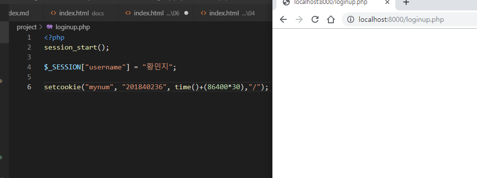
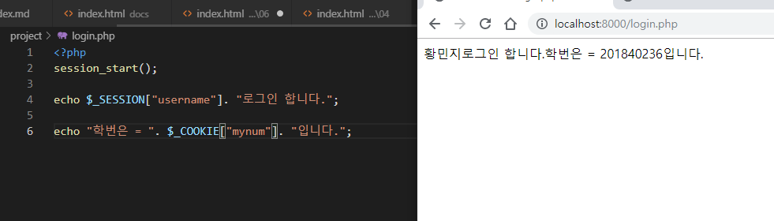
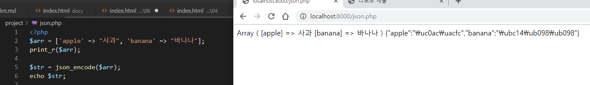

6주차 수업 2019.10.02
오전 수업 & 오후 수업 중간까지 작년 중간고사 정리
PHP 나아가기

아무것도 안 뜨는게 정상
--> session_start();
세션 데이터를 초기화 함 (실행함)
--> $_SESSION["username"] = "황민지";
id를 넣어준다
--> setcookie("mynum", "201840236", time()+(86400*30),"/");
-- setcookie (쿠키명, 쿠키값, 만료시간, 경로, 도메인, 보안, httponly); --
mynum이라는 쿠키에 201840236이라는 값을 넣고 쿠키의 만료 시간을 넣어준다.

--> session_start();
방금 받아온 세션 데이터를 초기화 함 (실행함)
echo 함수로 받아온 세션 데이터와 쿠키 데이터를 출력한다

--> $arr = ['apple' => "사과", 'banana' => "바나나"];
이것은 연관 배열이라고 한다. 배열 = ['키' => 값]
정수뿐만이 아닌 다양한 타입으로 설정한 배열이다. (위 같은 경우는 String과 char형으로 구성되어 있다.)
--> $str = json_encode($arr);
이는 arr 배열을 제이슨 즉, JS에서 사용 할 수 있도록 코드를 바꾸어 주는 명령어다.